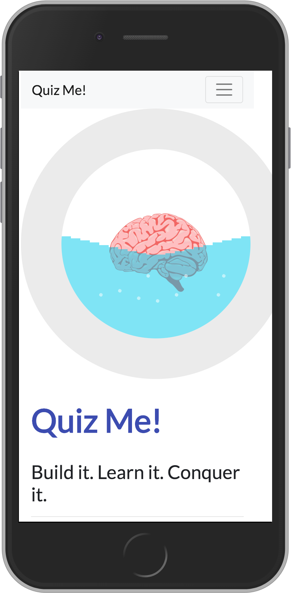
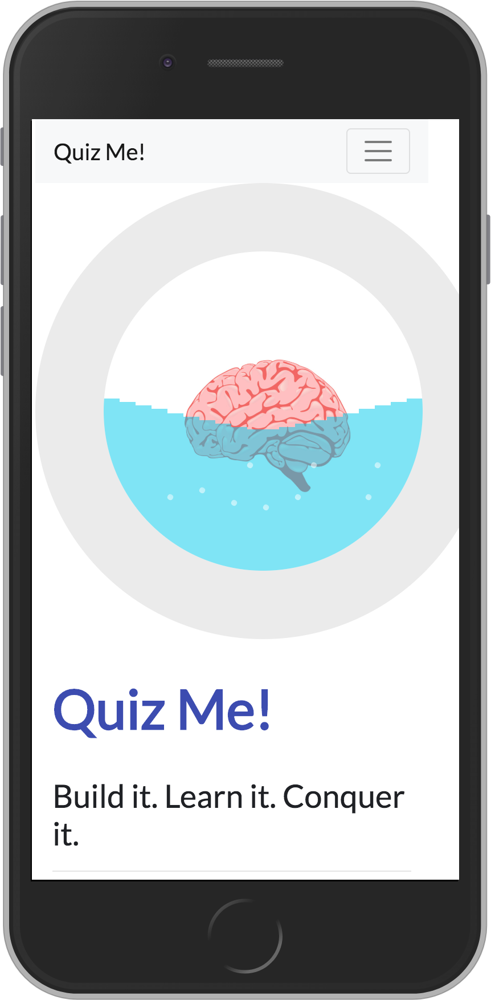

Outdoor enthusiast turned software engineer. I love taking on new challenges, which is why I entered the exciting field of web development. When I first entered web development, it immediately reminded me of my very first solo backpacking experience; I recognized I had a lot to learn - but quickly found fulfillment in the creative aspect of coding along with achieving the satisfaction that results from problem solving.
 

QuizMe is a Node.js/Express server-rendered application targeted to new programmers practice their knowledge of the ever-evolving concepts, languages, and algorithms of the tech world. Handlebars partials were used to render the front-end views. Settings are stored in a PostgreSQL database. Additions/newer versions will be made in React. This was our first full stack group project.
QuizMe is a Node.js/Express server-rendered application targeted to new programmers practice their knowledge of the ever-evolving concepts, languages, and algorithms of the tech world. Handlebars partials were used to render the front-end views. Settings are stored in a PostgreSQL database. Additions/newer versions will be made in React. This was our first full stack group project.
.png)
.png)
R.A.D. Hiking is a web app created to help users find a list of hikes based on their location input. Using the Hiking Project API, users can access over 74,000 miles of trail while also looking over features like length, rating and difficulty level. Weather information is recieved from the Open Weather Map API. This was my first front end group project.
Want to get in touch? Just want to say, 'Hi'? Feel free to reach out through e-mail or LinkedIn. Check out more of my code on GitHub. Thanks for stopping by!
Made with - Aylin